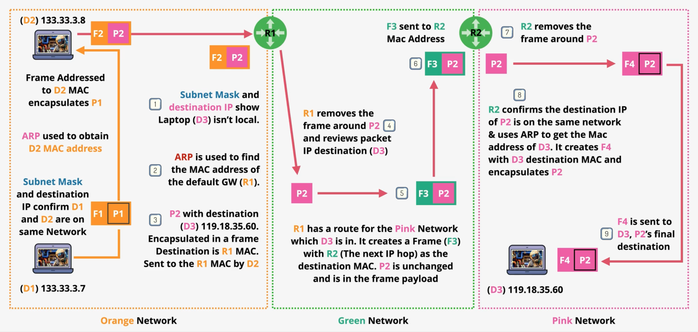

OSI 7-Layer Networking Model
The OSI (Open Systems Interconnection) model is a conceptual framework that describes the communication functions of a telecommunication or computer system. It includes 7 layers which is divided into two layers including Media Layers and Host Layers.
Physical Layer
Let’s imagine, we have two laptops and we want to connect them together. Since both laptops have network interface card, they can be connected using the network cable. We will use the copper network cable to create point-to-point electrical shared medium between these two devices. Physical medium can be copper, Fiber or WiFi.
Physical Layer specification define the transmission and reception of raw bit streams between a device and a shared physical medium. Specification means that both laptops have shared understanding of the physical medium.
If a device is referred as layer X, it means the device has functionality for layer X and below
If there is a more than two devices, it is not possible to connect them using the network cable, instead we can add a device called a HUB. The HUB job is to transmit anything received on any port, to every other port including any errors & collisions.
Cuople of points should be considered about physical layer:
There is no individual address, and all the data is processed by all devices.
If multiple devices transmit at once - a collision occurs
It has no media access control and no collision detection
Data Link Layer
It runs over the physical layer. There are different data link layer protocol & standards for the different situation. It defines the a new concept called frame.
Frames are a format for sending information over a layer 2 network. Layer 2 also introduces a unique hardware address, called MAC address e.g. 3e:22:fb:b9:5b:75 for every device in the network. The MAC address is hexadecimal address, and it is 48 bits long. THe MAC address is not software assigned, in other word, the address is uniquely attached to a specific piece of hardware.
The MAC address is formed of two parts:
OUI which is the organizationally unique identifier and this assigned to companies who manufacture network devices.
NIC (Network interface controller)
Combining these two parts together causing the MAC address be globally unique.
The frame is the thing that layer two uses for communication is a container of sorts, and has a few different components:
The Preamble & start frame delimiter. It allows the devices to know that it’s the start of the frame, so they can identify the various parts of that frame.
The destination and the source MAC addresses.
EtherType which is commonly used to specify which layer three protocol is putting its data inside a frame
Payload which is anywhere from 46 to 1500 bites in size for standard frames. It contains the data that the frame is sending. The data is generally provided by the layer three protocol and the protocol which is used
Frame check sequence which is used to identify any errors in the frame.

Encapsulation is the process of taking some data, and wrapping it inside the frame.
Still Hub can cause collision when both computers try to send the message. To avoid this collision, we can use Switch. Switch is a layer 2 device. It works the same way physically as hub, but it understand layer 2 so provides significant advantages.
Switch understand frames and MAC addresses. They maintain a MAC address table which starts off empty. As the switch receives frames on its port, it learn which devices are connected and populates the MAC address table.
If a frame is transmitted to specific MAC address, it will be forwarded to the specific port if the destination MAC address is in the table. If not, it will be forwarded to all the ports. Any frames with All f’s will always be forwarded to all ports.
Switches store and forward. They do not repeat blindly like hubs. It means that only valid frames are forwarded. Collisions are isolated on the port they occurred. Every X port switch has X collision domains meaning every port on a switch creates its own collision domain, allowing multiple simultaneous transmissions without collisions.
Network Layer
Newtwork layer is the common protocol, which can spam multiple different layer 2 (data link layer) networks. This layer can be added onto one or more layer 2 networks and it adds a few capabilities. It adds the internet protocol or IP which is across networking addresses, and can be assigned to devices. This can be used to communicate across networks using routing.
Devices called routers, which are layer 3 devices, move packets of data across different networks. They encapsulate a packet inside of an ethernet frame for that part of the journey over that local network.
Packet is the data unit used within the internet protocol which is layer 3 protocol. Packets in many ways are similar to frames. They contain some data to be moved and they have the source and destination address.
The difference is that with frames, both the source and destination are generally local. With an IP pocket, the destination and source addresses could be on opposite sides of the planet. During their journey from source to destination, packets remain the same. As they move across layer 2 networks, they are placed inside frames which is known as encapsulation.
Two version of the internet protocol in use:
version four which has been used for decades.
version six which adds more scalability
Address Resolution Protocol (ARP) is used generally when you have a layer 3 pocket, and you want to encapsulate it inside a frame, and then send that frame to a MAC address. Initially you do not know the MAC address so the protocol is required to determine the MAC address for a given IP address.
A normal network device such as your phone or laptop, it it received a pocket which was not destined for it, it would just drop that pocket. A router though, it is different. The router’s job is to route pockets so it is just fine to handle a pocket which is address somewhere else.

What Layer 3 (Network) added to Layer 2?
IP Address (IPv4/v6) - Cross network addressing
APR - Find the MAC address for this IP or given IP address
Route - where to forward a pocket
Route Tables - Multiple routes
Router - moves pockets from SRC top DEST - Encapsulating in L2 on the way
Device <=> Device communication over the internet
What IP does not provide?
It provides no method of individual channels of communication. Layer 3 provides pockets, and pockets only have source IP and destination IP. So if we are a given two devices you can only have one stream of communications. so you cannot have different applications on those devices communicating at the same time.
Pockets could be delivered out of order. Individuals pockets moves across the internet through intermediate networks, and depending on network conditions, there is no guarantee that those pockets will take the same route from source to destination. Becasue of different network conditions, it is possible they could arrive in a different order.
Transport & Session Layers
Layer 4 build on top of the layer 3 (network layer), and it adds two new protocols:
TCP (Transmission Control Protocol): You would pick TCP, when you want reliability, error correction, and ordering of data. It is used for most of the important application lab protocols such as HTTP, HTTPS, SSH, etc. TCP is a connection-oriented protocol meaning that you need to set up a connection between two devices and once set up, it creates a bidirectional channel of communications.
UDP (Usrer Datagram Protocol): It is faster, because it dose not have the TCP overhead required for the reliable delivery of data. This means that it is less reliable.
Both of these run on top of IP, and both of them add a collection of features depending on which one of them is used.
TCP something called segment. A segment is just another container for data like packet and frame. TCP segment are encapsulated within IP pocket. Segments do not have source or destination IP addresses, because they use the IP packets for transit from source to destination. TCP segments add additional capabilities to IP packets including source and destination ports, sequence, acknowledgment etc.
Source and destination ports which gives the combined TCP/IP protocol the ability to have multiple streams of conversations at the same time between two devices.
The sequence number is incremented with each segment that’s sent and it’s unique. It can be used for error correction, if things need to be re-transmitted, and it can be used to ensure that when IP packets are received, and TCP segments are pulled out, they can be correctly ordered. The sequence number is a way of uniquely identifying a particular segment within a particular connection so the both sides can make observations about it
The acknowledgment field is the that one side can indicate that is received up to and including a certain sequence number. Every segment which is transmitted needs to be acknowledged.